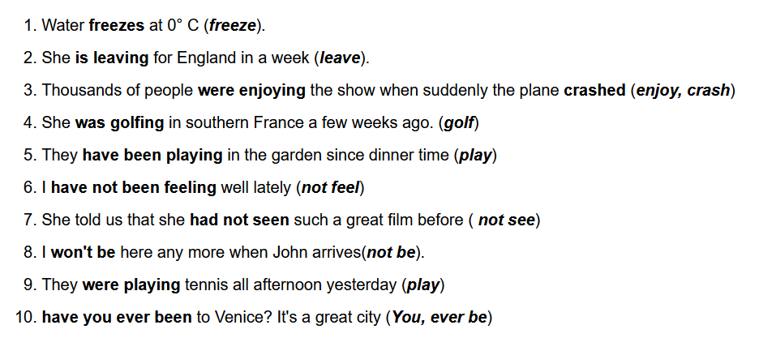
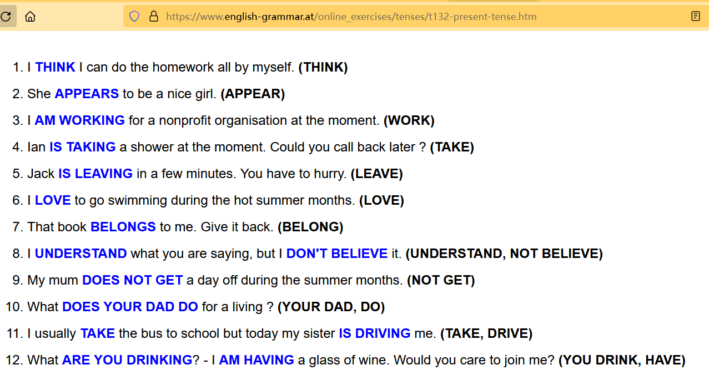

人类一败涂地-英语时态
英国外教不如Chatgpt
英国外教语法水平在百分之九十多，我的语法水平在40%左右，AI的英语语法水平是99%，经过修改能达到100%
T010
Your score is 81%
I usually go ( GO)by bus but tomorrow I am going ( GO) in Tom’s car.
“Are you coming with me?” 是一个疑问句，使用现在进行时，询问对方是否打算和自己一起去某个地方。常用于邀请别人一起参加某个活动。
“Do you come with me?” 是一个一般疑问句，使用一般现在时，询问对方是否经常或者通常和自己一起去某个地方。常用于询问别人是否有固定的伙伴、旅行计划等。
Are you writing (YOU WRITE )him tonight ? - Yes I always write(WRITE) to him on his birthday.
Do you write him tonight. 一般现在时，表示经常或者通常会进行的动作
由于，下一句回答说，我通常会在生日给他写信，所以用are you writing,表示询问是否会在今晚写信，
Do you speak english？表示你通常会说英语吗，
Do you speak english today? 表示今天你通常说英语吗，就不通顺。
因此使用are you writing，不用Do you writing.
那么我们也可以知道，询问通常会不会，就用Do you write
What is he doing ( HE DO) to his car now ? - I think (THINK) he is polishing ( POLISH )it.
因此，在这个疑问句中，主语是 “he”，而现在进行时态需要使用助动词 “is”，所以正确的形式是 “What is he doing to his car now?”。”is” 是 “he” 的正确助动词形式。
“what do he doing” 是语法上不正确的，应该是 “what does he do” 或者 “what is he doing”，这取决于你想要表达的意思和动作发生的时间。
T011
Your score is 54%
“My feet” 是复数形式，而 “foot” 是 “my feet” 的单数形式。
Me feet are killing (kill) me and my toes are bleeding.
Everything is (be) so different and I am trying (try) to adapt to the new way of life here.I am learning (learn) a little bit of the language to make communication easier.
它表达了一个正在进行的动作，也就是学习语言的过程，应该用现在进行时。因此，完整的句子应该是：”一切都很不同，我正试图适应这里的新生活方式。我正在学习一点语言以便更容易交流。”
Although I don’t understand (not understand) much yet I believe that I am slowly improving (slow improve).
表示目前正在缓慢地改善某种情况或某个方面，使用现在进行时态
I am doing (do) my best to catch up with him but he is younger and stronger than I am.
正确的答案应该是 “am doing”，表示现在进行时态，即 “我正在尽力赶上他，但他比我年轻、更强壮。”。因为该句中有 “正在”，表明该动作正在进行，因此需要使用现在进行时态。
T012
Your score is 34%.
Last year the neighbours complained because of the noise, so my husband spent weeks training him to press his paw on the latch to let himself in.
在这个句子中，括号里应该用spend的过去式spent。因为“spend”是不及物动词，表示花费时间，没有被动语态。在过去完成时中，要使用spent作为主语“my husband”的动词过去分词。
Since then, he has developed (DEVELOP) another bad habit
如果这个句子中的时间是在过去并且没有涉及到现在，那么应该使用 “had developed”。如果这个句子所描述的动作从过去一直持续到现在并且对现在有影响，那么应该使用 “has developed”
Yesterday my husband removed (REMOVE) the gate and Rex got (GET) so mad.
动作发生在过去，所以需要使用过去时态来描述。此外，由于这是一个完成的动作，所以需要使用过去完成时态，形式为 “got”。
T013
Your score is 73%
I do not understand why the authorities aren’t doing anything to preserve it.
使用“aren’t doing”强调的是现在正在发生的事情，即目前当局没有为保护这座城镇做出行动。而使用“don’t do”则更倾向于表示长期以来当局一直没有为保护这座城镇做出行动。两者的差异在于强调的时间范围不同。
这句话的语境是现在，表示现在当局没有采取措施来保护这个城镇，因此要使用现在进行时态。而 don’t do 表示的是一般现在时态，表示一般情况下当局没有采取措施，语态上不太符合当前情况。
They always tell people that they are making decisions in the interest of the people but I can’t see that happen.
他们总是告诉人们他们在为人民利益做决定，但我看不到这种情况发生。
T014 Present Tense Simple and Progressive
Your score is 80%
She only works (WORK) four days a week and she doesn’t work (NOT WORK) on Fridays. She’ll be here next Monday.
“Don’t work” 是 “do not work” 的缩写，表示主语 “you/we/they” 在一般现在时态下的否定形式，例如 “They don’t work on weekends.”
“Doesn’t work” 是 “does not work” 的缩写，表示主语 “he/she/it” 在一般现在时态下的否定形式，例如 “She doesn’t work on Fridays.”
在英语中，一般现在时态的动词变化规则中，第三人称单数（he/she/it）需要在动词后面加上 -s 或 -es，所以在否定句中需要加上助动词 “does” 或 “doesn’t”，以便表示否定形式。
I am wasting (WASTE) my time here then. I’ll get back to my computer.
这里用了现在进行时，表示目前正在浪费时间
T024-All Tenses
Your score is 27%.

I have not been feeling well lately (not feel)
句子的语境表明，”我”最近感觉不太好。因此，空格处需要填入”have not been feeling”来表示”我”最近的状态，这是现在完成进行时态，用于描述过去一段时间内一直持续的状态或动作。这个时态通常由”have/has + been + 动词ing形式”构成。
句子 “She was golfing in southern France a few weeks ago” 使用了过去进行时态。过去进行时态用于描述在过去某个时间段内正在进行的动作。在这个句子中，”she”在过去的某个时间段内正在打高尔夫球，因此使用了过去进行时态 “was golfing”。
过去进行时态通常由助动词”be”的过去式”was/were”加上动词的现在分词构成。因此，”was golfing”表示在过去某个时间点”她”正在进行这个动作。
“She had not seen such a great film before, she told us.”
句子的语境表明，”她”告诉我们之前从未看过这么好的电影。因此，空格处需要填入”had not seen”，表示在过去某个时间点之前没有看到这部电影。这个时态叫做”过去完成时”，它用于描述在过去某个时间点之前已经完成的动作，通常由助动词 “had” + 过去分词构成。
“They were playing tennis all afternoon yesterday.”
句子的语境表明，”他们”昨天下午一直在打网球。这个句子中使用了过去进行时，即 “were playing”，用于描述在过去某个时间段内正在进行的动作。因此，空格处需要填入”were playing”，表示过去某个时间段内”他们”正在打网球，这个动作正在进行中。
“He realized that he had lost his keys.”
句子的语境表明，”他”突然意识到他的钥匙丢了。由于这个事件发生在过去，所以需要使用”过去完成时”来描述前面已经发生过的动作，即”他丢失了钥匙”。因此，空格处需要填入”had lost”，表示他在之前的某个时间点已经丢失了钥匙。
“Have you ever painted anything like that before?”
这个句子是一个完整的疑问句，用于询问对方是否曾经画过类似的东西。句子中使用了现在完成时，即 “have painted”，表示过去某个时间到现在一段时间内发生的动作，并强调这个动作对当前的影响。因此，空格处需要填入 “Have you ever painted”，表示询问对方是否有过类似的经历。
“After he had done his homework, he went to play with his friends.”
这个句子使用了过去完成时态，表示在过去某个时间点之前已经完成了某个动作，而后又发生了另一个动作。因此，空格处需要填入 “had done”，表示 “他完成了作业”。
Have you done your work yet? Yes, I did it all yesterday. (do)
根据句子的语境，空格里需要填入 “do” 的现在完成时态。句子可以改写为 “Have you done your work yet? Yes, I have done it all yesterday.”。在英语中，现在完成时态表示的是过去某个时间点开始的动作一直持续到现在或者与现在相关的过去时间内已经完成的动作。这个时态通常由助动词 “have” 或 “has” 以及动词的过去分词构成。
We were sitting around the table when the lights went out
这里用了过去进行时态 “were sitting” 来描述一个过去某个时间点正在进行的动作，即 “我们正在桌子周围坐着”。而后面用了过去时态 “went out” 来描述另一个已经发生的过去的动作，即 “灯灭了”。这种时态的使用，更准确地表达了过去的时间关系和动作的发生顺序。
总之，过去进行时态通常用于强调过去某个时间点正在进行的动作，而过去时态则用于描述过去已经发生的动作。
T050
T052
Your score is 68%
Bob is having a driving lesson. He has never had one before.
The road is closed. There has just been an accident.
When Sarah arrived at the party Bob was not (NOT BE) there. He had just gone home.
When Ken gave up smoking two years ago, he had been a smoker for over 30 years.
I didn’t study last night and I am not studying tonight either.
T053
Why were you talking to John when I saw you at the cafeteria yesterday?
T055
T056
I’m sorry, Dad is not here. He has just left (JUST LEAVE) for work.
Nancy and Bob got (GET) married five years ago.
Would you like something to drink? - No, thanks, I have just had (JUST HAVE) a cup of tea.
How many goals have you scored (YOU SCORE) this season Graham? - Only two, but we have played (PLAY) only three games so far. - And last year? How many goals did you score (YOU SCORE) last year? - Twenty one.
格雷厄姆，这个赛季你进了多少球？
我已经有了sth，I have had sth.
我们已经有了一辆车，we have had a car
T062
Your score is 74%
So far today到今天为止
T066
Your score is 70%
When did you see them last ?
Did you speak to them (YOU SPEAK) ?
T072
has had是什么时态? 现在完成时
had和has had有什么区别?
“had” 和 “have had” 都是动词的形式，但它们在用法和含义上略有不同。
“had” 是 “have” 的过去式，表示过去某个时间点或过去某个事件发生时所具有的动作、状态或经历。它通常用于过去完成时态，如：
- I had a delicious meal yesterday.（我昨天吃了一顿美味的饭菜。）
- She had already left when I arrived.（我到达时她已经离开了。）
- They had studied for the exam before it started.（他们在考试开始之前已经学习了。）
“have had” 则是 “have” 的现在完成时态，表示过去某个时间点开始，一直延续到现在的动作、状态或经历。它强调过去的经验或对现在造成的影响。例如：
- I have had this car for five years.（我已经拥有这辆车五年了。）
- She has had a lot of success in her career.（她在事业上取得了很大的成功。）
- They have had a difficult time adjusting to the new schedule.（他们一直在努力适应新的时间安排。）
总结来说，”had” 是表示过去某个时间点的动作或状态，而 “have had” 则是表示从过去某个时间点开始一直延续到现在的动作或状态。
T075
https://www.english-grammar.at/online_exercises/tenses/t075-present-simple-continuous.htm
T080
1 | |
Could I use your phone ? - I’m afraid it is not working (not work) at the moment.
T082
T085
T095
https://www.english-grammar.at/online_exercises/tenses/t095-present-tense.htm
1 | |
She (?) this morning. She is on holiday (NOT TEACH)
T132

Jack is leaving in a few minutes. You have to hurry. (LEAVE)
“is leaving”是现在进行时态。它是由be动词”is”和动词”leave”的现在分词”leaving”构成的。现在进行时态用来描述目前正在进行的动作，可以表示现在的临时状态或动作。例如，”He is leaving the house”可以表示他正在离开房子这个动作正在进行中。
1 | |